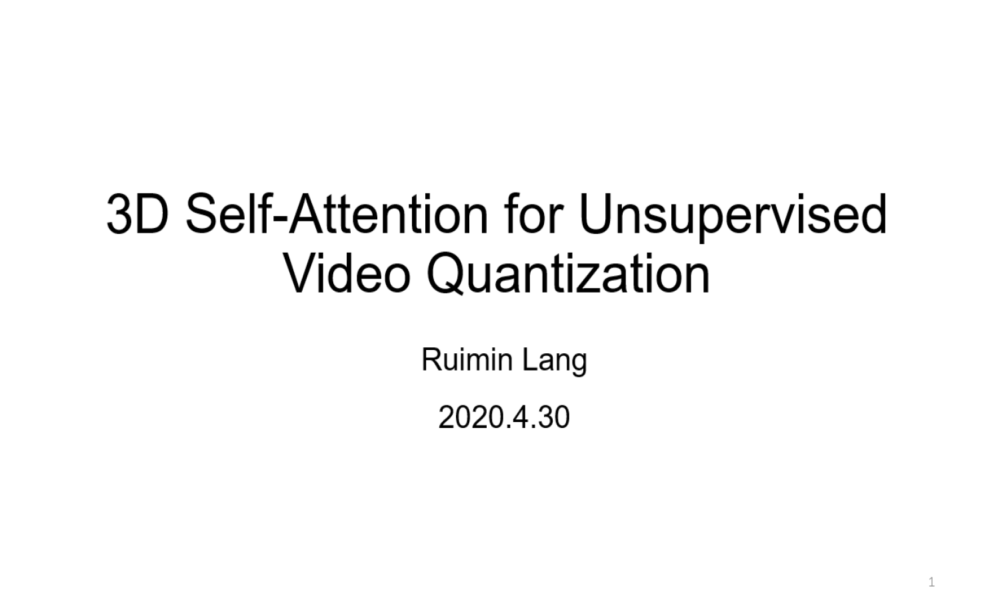

Speaker: Ruimin Lang [
PPT (password: 90li)]
Topic:3D Self-Attention for Unsupervised Video Quantization
Date:April 30, 2020
Abstract:
Unsupervised video quantization is to compress the original videos to compact binary codes so that video retrieval can be conducted in an efficient way. In this paper, we make a first attempt to combine quantization method with video retrieval called 3D-UVQ, which obtains high retrieval accuracy with low storage cost. In the proposed framework, we address two main problems:
1) how to design an effective pipeline to perceive video contextual information for video features extraction;
2) how to quantize these features for efficient retrieval.